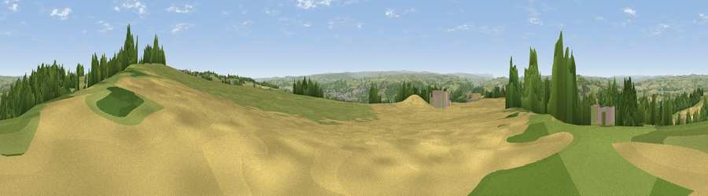

Viewpoint near Wall
#7560 in England · top 8% of its area beats it · near WallWhere it is
The exact computed spot (NY 93225 68975). Click the marker for map links.
The view, rendered

A 360° render of this exact spot computed from the terrain model, tree cover and land cover — summer colours, afternoon light, calibrated against photographs of famous viewpoints. Real trees, hedges and buildings will differ in detail.
The panorama
Grey silhouette: terrain skyline in each direction (720 bearings, Earth curvature and refraction included). Dashed green: skyline with trees (+15 m) and buildings (+8 m) as obstacles. Blue strip: how far the ground is visible on each bearing.
Where the view opens
Wedge length = distance to the farthest visible ground on that bearing (vegetation-aware). Rings at 10, 25 and 50 km.
What fills the view
58% grassland · 21% cropland · 19% woodland · 2% built-up
Angular shares of the visible panorama (visual magnitude), not map area. Landscape diversity 0.45 (0–1 Shannon).
Key numbers
More beautiful places nearby
The staircase of upgrades: each row has a higher view potential than everything closer. Driving times are estimates from straight-line distance, calibrated against real road routing — check an actual route before setting out.
| Place | Direction | Drive | Score |
|---|---|---|---|
| Viewpoint near Chollerford | ENE · 2 km | ~4 min | 67.5 |
| Viewpoint near Fourstones | WSW · 3 km | ~7 min | 71.4 |
| Viewpoint near West Woodburn | N · 15 km | ~27 min | 73.4 |
| Viewpoint near Greenside | ESE · 20 km | ~34 min | 74.2 |
| Viewpoint near Allenheads | SSW · 27 km | ~43 min | 74.6 |
| Pontop Pike | SE · 27 km | ~43 min | 77.8 |
| Viewpoint near Thropton | NNE · 31 km | ~48 min | 81.8 |
| Viewpoint near Hepple | NNE · 31 km | ~49 min | 82.4 |
55.01528, -2.10748 · source: screening · position refined by local search. Computed location — check access rights before visiting.